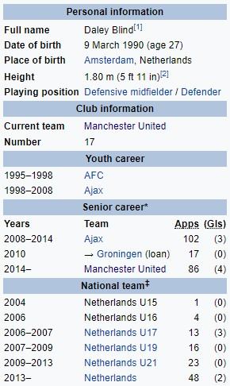

Дејли Блинд
Дејли Блинд (рођен 9. марта 1990.) је холандски професионални фудбалер који игра као дефанзивни везни играч, леви бек и централни одбрамбени за енглески клуб Манчестер Јунајтед и националну репрезентацију Холандије. Он је син бившег браниоца Ајакса и бившег менаџера Холандске репрезентације Данија Блинда. Блинд је одрастао у Ајаксу, постао је редован након позајмице у Гронингену и освојио четири узастопне титуле Ередивизије са клубом. У септембру 2014, прешао је у Манчестер Јунајтед за 13,8 милиона фунти. Пуна интернационалност од 2013. године, зарадио је преко 40 наступа и био члан холандске екипе која је завршила трећа на ФИФА Светском првенству 2014. године.
